Table of Contents
Code and general idea inspired by the “Wes Anderson Palettes” R-Package.
Citing package
citation('LimnoPalettes')##
## To cite package 'LimnoPalettes' in publications use:
##
## Paul Julian (2020). LimnoPalettes: A Limnology Themed Palette
## Generator. R package version 0.1.1.
## https://github.com/SwampThingPaul/LimnoPalettes
##
## A BibTeX entry for LaTeX users is
##
## @Manual{,
## title = {LimnoPalettes: A Limnology Themed Palette Generator},
## author = {Paul Julian},
## year = {2020},
## note = {R package version 0.1.1},
## url = {https://github.com/SwampThingPaul/LimnoPalettes},
## }Installation
Version 0.1.0 is offically on CRAN
install.packages("LimnoPalettes")Development version can be installed from this repo.
install.packages("devtools");# if you do not have it installed on your PC
devtools::install_github("SwampThingPaul/LimnoPalettes")Now Presenting…
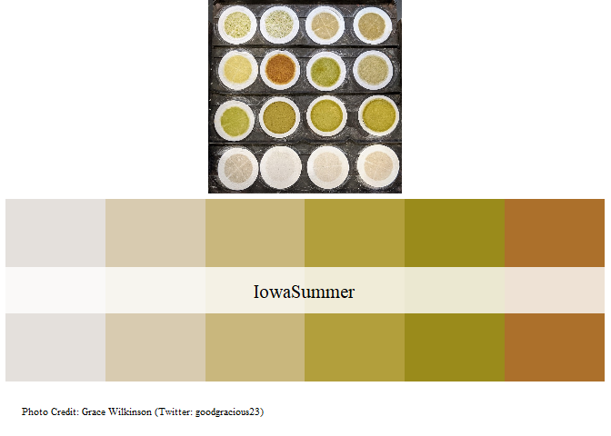
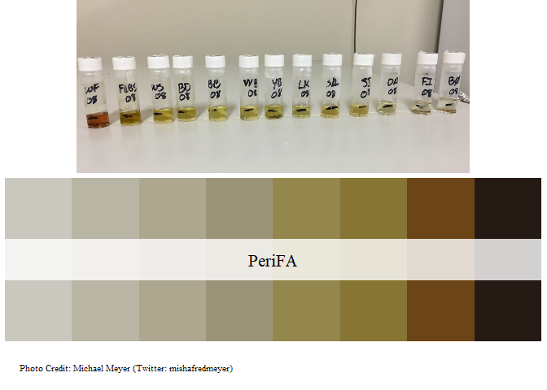
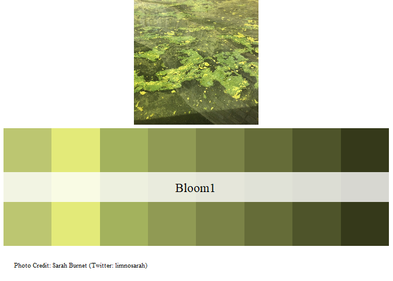
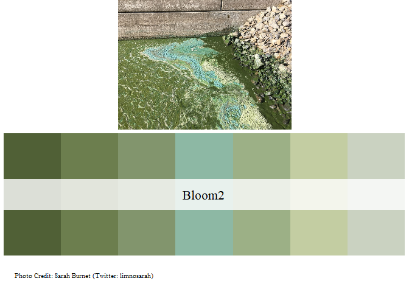
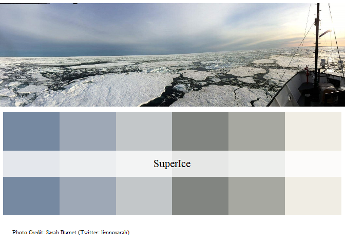
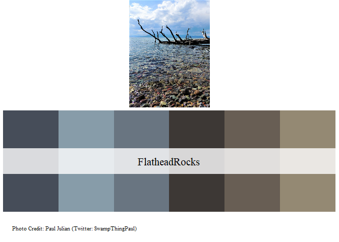
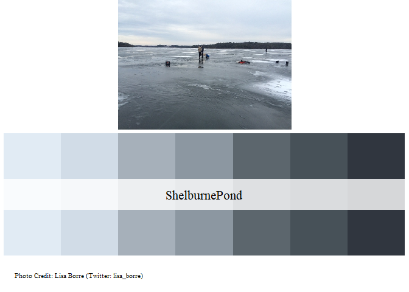
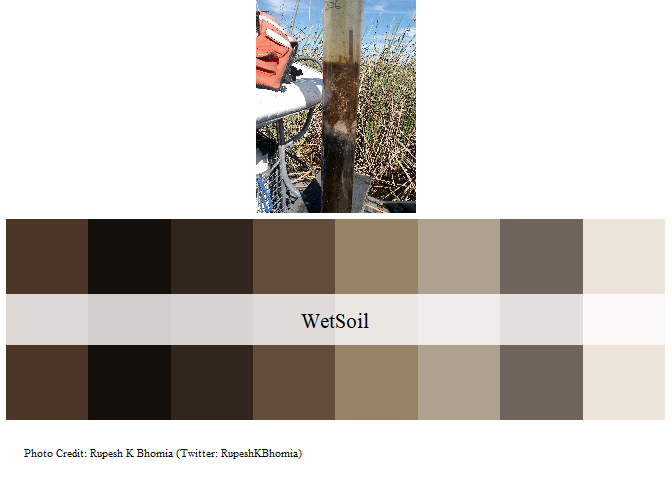

 Image shared on ABC Midwest and Wheatbelt Facebook Page
Image shared on ABC Midwest and Wheatbelt Facebook Page

Working Examples.
set.seed(1)
dat = data.frame(Group=c(rep("A",10),rep("B",10),rep("C",10),rep("D",10)),
var1=rnorm(40),var2=runif(40,1,15),var3=rpois(40,3))
cols = limno_palette("SuperIce",4)
boxplot(var2~Group,dat, col=cols)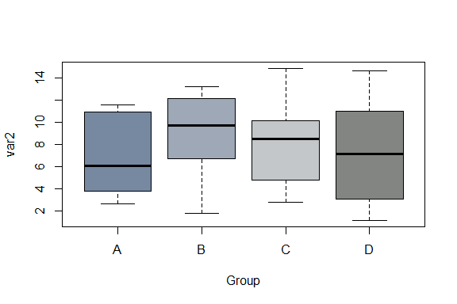
cols = limno_palette("IowaSummer",4,"continuous")
cols2 = cols[dat$Group]
plot(var2~var3,dat,pch=21,bg=cols2,cex=2)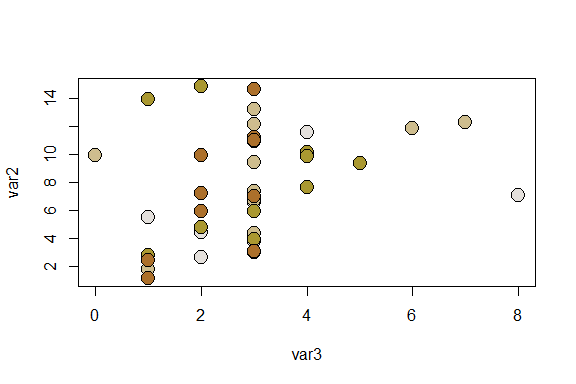
cols = limno_palette("PeriFA",4,"continuous")
barplot(aggregate(dat$var3,list(dat$Group),mean)$x,names.arg=unique(dat$Group),ylim=c(0,4),col=cols)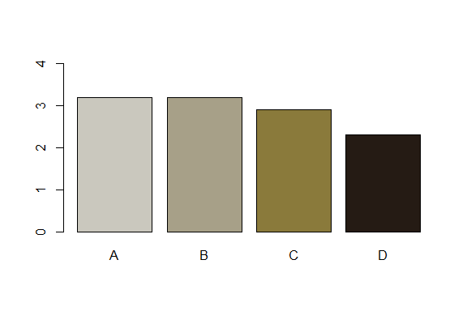
While not a part of this package, for data visualization purposes it would be a good idea to see how these colors are perceived for people with color blindness.
library(colorBlindness)
mat = matrix(1:81, nrow = 9, ncol = 9)
library(ggplot2)
library(reshape2)
cols = limno_palette("IowaSummer")
mat1 = melt(t(mat[9:1, ]))
len = length(cols)-1
mat1$v2 = cut(mat1$value,
breaks = seq(0,ceiling(81/len)*len,
length.out = len+1))
ht = ggplot(mat1) +
geom_tile(aes(x=Var1, y=Var2, fill=v2)) +
scale_fill_manual(values=cols) +
theme_bw()
# check the plot by CVD simulator
cvdPlot(ht)
# Second Example
cols = limno_palette("Bloom2",10, "continuous")
mat1 = melt(t(mat[9:1, ]))
len = length(cols)-1
mat1$v2 = cut(mat1$value,
breaks = seq(0,ceiling(81/len)*len,
length.out = len+1))
ht = ggplot(mat1) +
geom_tile(aes(x=Var1, y=Var2, fill=v2)) +
scale_fill_manual(values=cols) +
theme_bw()
# check the plot by CVD simulator
cvdPlot(ht)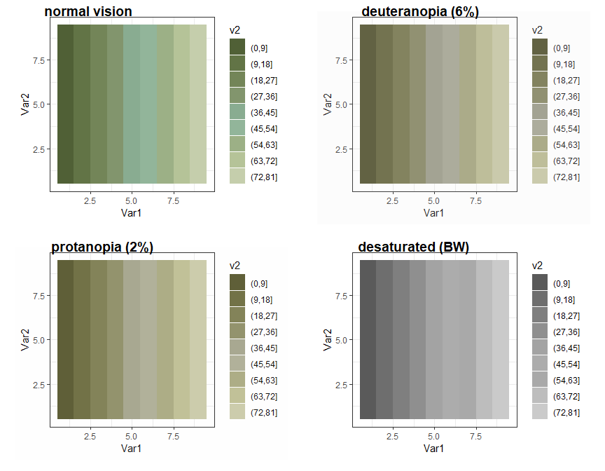